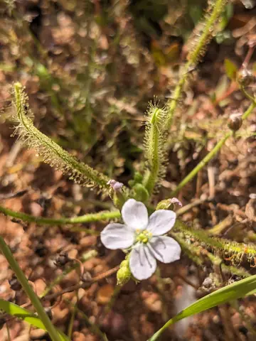
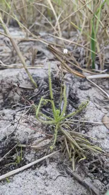
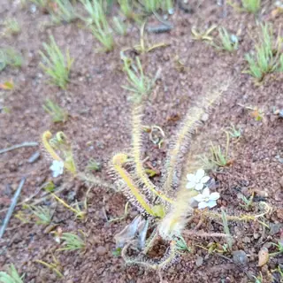

Drosera finlaysonii



- Genus
- Drosera (sundews), family Droseraceae
- Subgenus
- Drosera
- Section
- Arachnopus
Original description
First described in 1837:
Drosera finlaysonii Wall. ex Arn., Compan. Bot. Mag. 2: 314. 1837 , as 'finlaysoni'
Read the original page (Biodiversity Heritage Library) · IPNI record
How well the identifier knows it
Of 40 validation photos of Drosera finlaysonii (photos the model never trained on), its top guess was right for 34. It gave a confident answer for 35 of them, and 31 of those were right.
Trained on 132 photos of this species.
Most often mistaken for
- Drosera indica (4 photos)
- Drosera aquatica (1 photo)
- Drosera serpens (1 photo)
Learn more
- iNaturalist: observations and range map